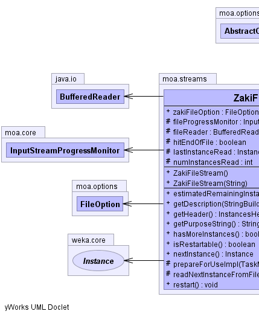
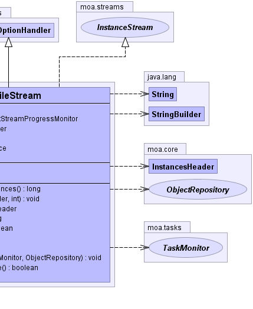

public class ZakiFileStream
extends moa.options.AbstractOptionHandler
implements moa.streams.InstanceStream
|  |  |
| Modifier and Type | Field and Description |
|---|---|
protected moa.core.InputStreamProgressMonitor |
fileProgressMonitor |
protected java.io.BufferedReader |
fileReader |
protected boolean |
hitEndOfFile |
protected weka.core.Instance |
lastInstanceRead |
protected int |
numInstancesRead |
moa.options.FileOption |
zakiFileOption |
| Constructor and Description |
|---|
ZakiFileStream() |
ZakiFileStream(java.lang.String zakiFileName) |
| Modifier and Type | Method and Description |
|---|---|
long |
estimatedRemainingInstances() |
void |
getDescription(java.lang.StringBuilder sb,
int i) |
moa.core.InstancesHeader |
getHeader() |
java.lang.String |
getPurposeString() |
boolean |
hasMoreInstances() |
boolean |
isRestartable() |
weka.core.Instance |
nextInstance() |
protected void |
prepareForUseImpl(moa.tasks.TaskMonitor tm,
moa.core.ObjectRepository or) |
protected boolean |
readNextInstanceFromFile() |
void |
restart() |
copy, discoverOptionsViaReflection, getCLICreationString, getOptions, getPreparedClassOption, prepareClassOptions, prepareForUse, prepareForUsepublic moa.options.FileOption zakiFileOption
protected java.io.BufferedReader fileReader
protected boolean hitEndOfFile
protected weka.core.Instance lastInstanceRead
protected int numInstancesRead
protected moa.core.InputStreamProgressMonitor fileProgressMonitor
public ZakiFileStream()
public ZakiFileStream(java.lang.String zakiFileName)
public java.lang.String getPurposeString()
getPurposeString in interface moa.options.OptionHandlergetPurposeString in class moa.options.AbstractOptionHandlerprotected void prepareForUseImpl(moa.tasks.TaskMonitor tm,
moa.core.ObjectRepository or)
prepareForUseImpl in class moa.options.AbstractOptionHandlerpublic void getDescription(java.lang.StringBuilder sb,
int i)
getDescription in interface moa.MOAObjectpublic moa.core.InstancesHeader getHeader()
getHeader in interface moa.streams.InstanceStreampublic long estimatedRemainingInstances()
estimatedRemainingInstances in interface moa.streams.InstanceStreampublic boolean hasMoreInstances()
hasMoreInstances in interface moa.streams.InstanceStreampublic weka.core.Instance nextInstance()
nextInstance in interface moa.streams.InstanceStreampublic boolean isRestartable()
isRestartable in interface moa.streams.InstanceStreampublic void restart()
restart in interface moa.streams.InstanceStreamprotected boolean readNextInstanceFromFile()